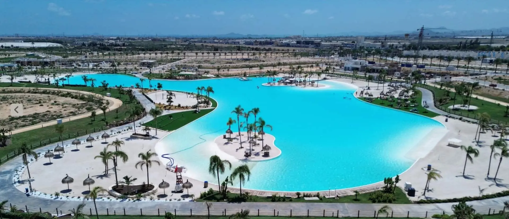
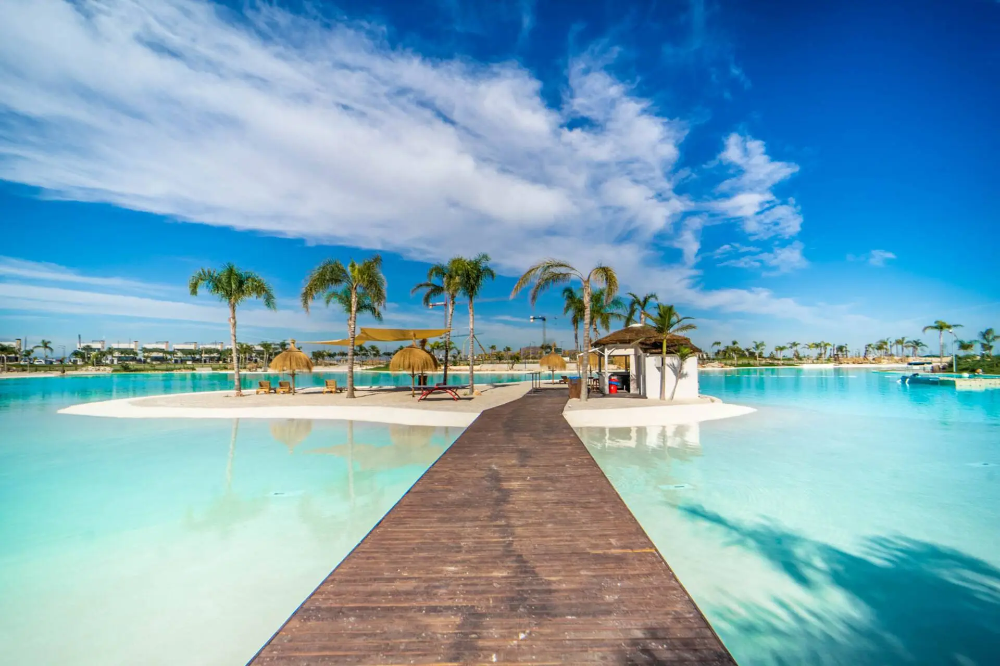

Torre-Pacheco · Región de Murcia
Santa Rosalía Lake & Life Resort
Un resort construido alrededor de una laguna cristalina, a pocos minutos del Mar Menor.
El resort
Una laguna, una playa y espacio para respirar

Santa Rosalía es un resort en crecimiento en la Costa Cálida, organizado alrededor de su Laguna de Cristal y de amplias zonas verdes. Tiene senderos para pasear y montar en bici, instalaciones deportivas, gimnasio y minigolf.
Villa Almendro 67 está a cien metros de la laguna. Las pulseras para la laguna y las instalaciones del resort se incluyen con la villa.
La Laguna de Cristal
- Unos 16.000 m² de agua clara y tranquila con playas de arena blanca, en el centro del resort.La Laguna de Cristal
- Los senderos para pasear y montar en bici recorren el resort, junto a las instalaciones deportivas, el gimnasio y el minigolf. El resort sigue creciendo y abre nuevas zonas a medida que se construye.
 Senderos, deporte y minigolf
Senderos, deporte y minigolf - El Mar Menor es una gran laguna salada junto al Mediterráneo, de aguas poco profundas, templadas y tranquilas, ideal para niños. Sus playas están a un corto trayecto en coche.
 Un mar tranquilo a pocos minutos
Un mar tranquilo a pocos minutos
Santa Rosalía y la costa
Lo que rodea la casa, de la laguna al Mar Menor.
Ubicación
En el corazón de la Costa Cálida
Torre-Pacheco · Región de Murcia
En coche, aproximadamente
- 100m
Laguna de Cristal
 5min
5minLos Alcázares y el Mar Menor
- 3min
Mar Menor Golf
 25min
25minAeropuerto Región de Murcia (RMU)

Alójate a cien metros de la laguna
Villa Almendro 67 es para diez, con piscina climatizada propia y solárium.
Villa Almendro 67